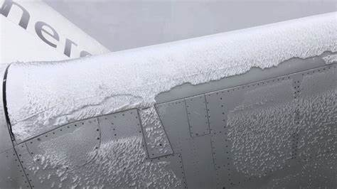
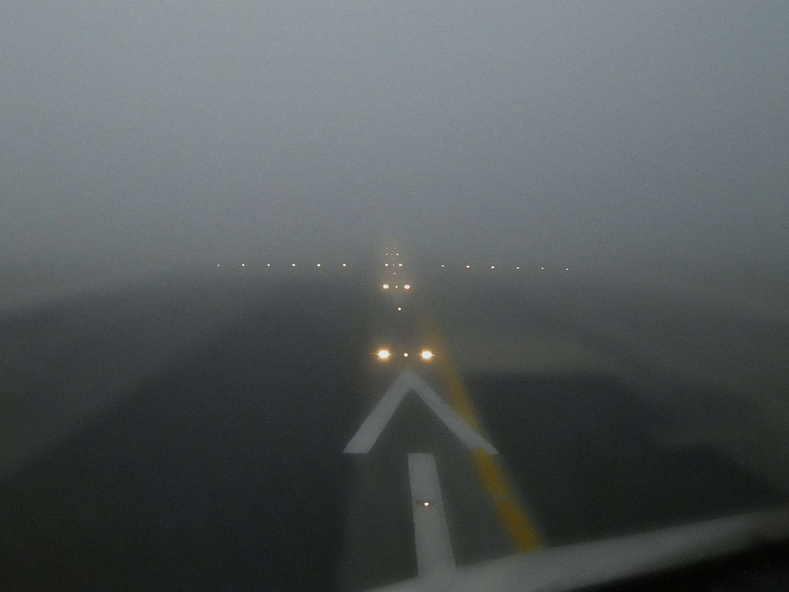

Eventos Meteorológicos
La información proporcionada por los meteorólogos aeronáuticos es esencial para garantizar la seguridad y la eficiencia de los vuelos. Algunas de las formas en que la meteorología aeronáutica puede afectar el vuelo son:
Turbulencias
Engelamiento
Visibilidad
Vientos
NUBES
Son un conjunto o asociación, grande o pequeña, de gotitas de agua (y a veces también de cristales de hielo) producto de un gran proceso de condensación. Se presentan con los más variados colores, aspectos y dimensiones, según las altitudes en que aparecen y las características particulares de la condensación.
Clasificacion de las Nubes
Las nubes, han sido clasificadas desde hace ya mucho tiempo, en diez (10) géneros principales, teniendo en cuenta su forma, admitiéndose también subdivisiones en especies y variedades. A su vez se han dividido en cuatro (4) grupos de acuerdo a la altura de la base de cada tipo de nube.

CIRRUS (Ci)
Son nubes separadas, en forma de filamentos blancos y delicados o en forma de bancos, o de cabellos o de bandas angostas.
Se encuentran a una altura que oscila entre 6 a 12 km y están compuestas por cristales de hielo, ya que a esa altura la temperatura es de –20 °C a –60 ºC.
Ver apéndice
CIRROSTRATUS (Cs)
Capa o velo nuboso transparente y blanquecino, de aspecto fibroso o liso, que cubre total o parcialmente el cielo produciendo generalmente fenómenos de halo.
También están asociados a frentes y por lo general se mueven de oeste a este.
Ver apéndice
CIRROCUMULUS (Cc)
Banco, manto o capa delgada de nubes blancas, sin sombras propias, compuestas por elementos muy pequeños, en forma de grumos, de rizos, de granos de arroz, etc. Pueden estar soldados o no y dispuestos más o menos regularmente.
Suelen estar acompañados de Cirrus.
Ver apéndice
ALTOCUMULUS (Ac)
Banco, capa o manto de nubes, blanco, gris o ambos colores a la vez.Generalmente tienen sombras propias y los elementos que los componen tienen apariencia de láminas, guijarros, rollos, empedrados, etc... los que a veces son en parte fibrosos o difusos, y que pueden estar soldados o no.
Ver apéndice
ALTOSTRATUS (As)
Capa o manto nuboso, grisáceo o azulado, de aspecto estriado, fibroso o uniforme, que cubre entera o parcialmente el cielo. Tiene partes bastante delgadas como para permitir que se observe el Sol en forma difusa, como a través de un vidrio esmerilado.
Este tipo de nubes difunde tanto la luz del Sol, que las sombras se hacen muy difusas, llegando en algunos casos a desaparecer.
Ver apéndice
STRATUS (St)
Capa nubosa, generalmente gris. De base uniforme, que puede dar lugar lloviznas. Cuando el Sol es visible a través de estas nubes, su contorno se destaca claramente.
Ver apéndice
STRATOCUMULUS (Sc)
Banco, manto o capa de nubes grises o blanquecinas, o grises y blanquecinas a la vez que casi siempre tienen partes sombreadas compuestas de mosaicos, guijarros, rollos, etc., sin aspecto fibroso y que pueden estar o no soldadas entre sí.
Ver apéndice
NIMBOSTRATUS (Ns)
Capa nubosa gris, frecuentemente oscura, cuyo aspecto resulta difuso por la lluvia o nieve que cae en forma más o menos continua y que en la mayoría de los casos, llega al suelo. El espesor de estas nubes es suficiente como para ocultar el Sol.
Ver apéndice
CUMULUS (Cu)
Nubes separadas, generalmente densas y de contornos bien definidos. Se desarrollan verticalmente, en forma de promontorios cúpulas o torres y cuya parte superior saliente se asemeja a una coliflor.
Ver apéndice
CUMULONUMBUS (Cb)
Nube densa, potente y gigantesca. Tiene considerable desarrollo vertical y aparece en forma de montaña o de torres enormes. Por lo menos una porción de su parte superior suele ser lisa, fibrosa o estriada y casi siempre achatada. Su parte superior, muchas veces se extiende en forma de yunque o de un gran penacho.
Ver apéndiceTenes fotos de nubes?
Si te gusta fotografiar el cielo envianos tus fotos y animate a clasificar las nubes con nosotros!